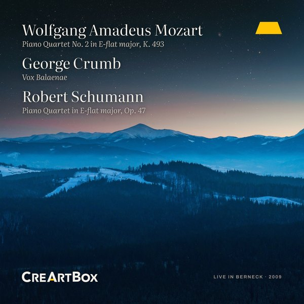
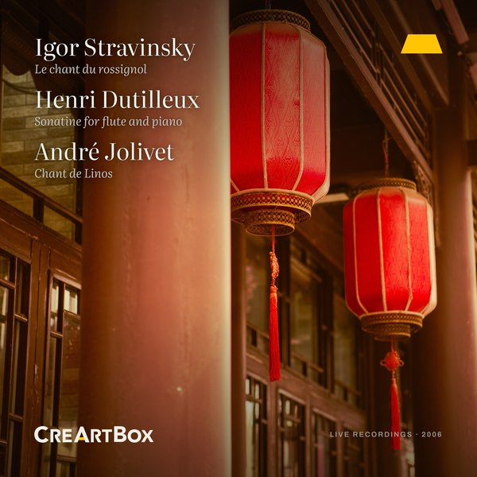

Music from the opera
Music from the opera
Discography
The records.
Three records, 23 tracks, all of it here to play from beginning to end. The player follows you around the site, so you can start a quartet here and keep listening while you read something else.
Every record is also a physical object: a CD at $15 and a vinyl LP at $50, each one signed, each one sent with a personal note from the artists. Shipping is charged on top and depends on where you are. Orders and questions go to info@creartbox.nyc.
Music from the opera

Live in Berneck · 2009Mozart · Crumb · Schumann
Wolfgang Amadeus Mozart · George Crumb · Robert Schumann
- Played byDaniel del Pino, piano · Lyonel Schmit, violin · David Quiggle, viola · Viturin Döring, cello · Guillermo Laporta, flute
- SoundGuillermo Laporta Castillo
- Running time75:43 · 8 tracks
Recorded live at the Catholic Church of Berneck, Switzerland, on 9 January 2009.
- 10:14
- 9:16
- 8:10
- 21:57
- 8:52
- 3:42
- 6:33
- 7:00

Live recordings · 2006Stravinsky · Dutilleux · Jolivet
Igor Stravinsky · Henri Dutilleux · André Jolivet
- Played byMusikene Symphony Orchestra · Guillermo Laporta, flute
- SoundGuillermo Laporta Castillo
- Running time39:22 · 3 tracks
Recorded live in 2006: the Stravinsky at Musikene, San Sebastián, the Dutilleux and the Jolivet at an Ibercaja concert in April.
- 19:53
- 9:01
- 10:28